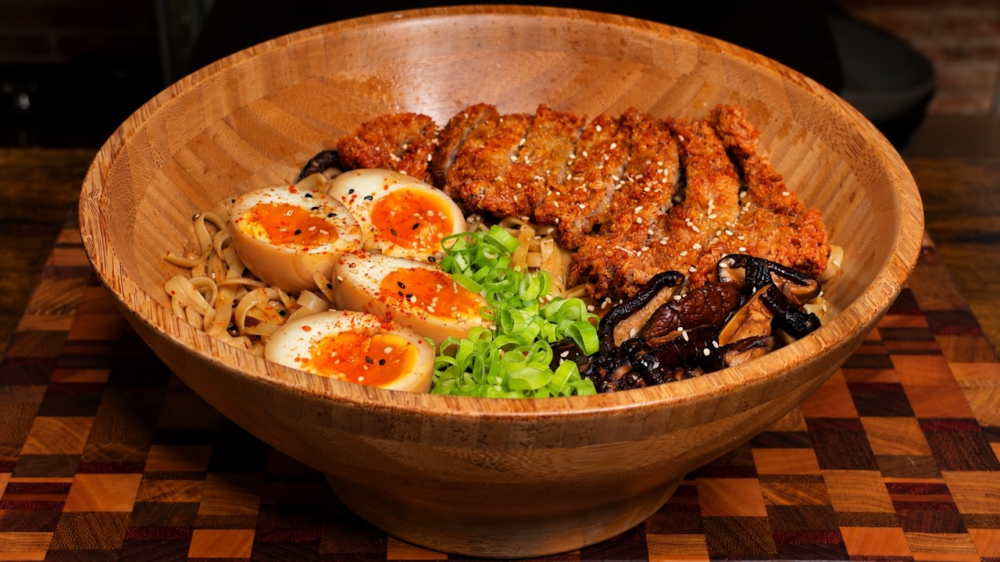

Por probar · Japonesa
← Recetas
Ramen Shoyu con Tonkatsu

⚠️ Versión reconstruida. El vídeo original no tiene subtítulos ni pasos escritos; esta receta recrea sus componentes (tonkatsu, fideos con salsa, huevo mollet, shiitake) con cantidades típicas. Ajusta a tu gusto.
Preparación
- Huevos mollet: hierve los huevos 6,5 minutos, pásalos a agua con hielo y pélalos. Resérvalos.
- Tonkatsu: salpimienta el cerdo y pásalo por harina, huevo batido y panko. Fríe en aceite caliente ~3 min por lado hasta dorar. Escurre y corta en tiras.
- Caldo: sofríe el ajo y el jengibre picados con el aceite de sésamo. Añade el caldo, la soja, el mirin y las shiitake. Hierve a fuego suave 10-15 min.
- Cuece los fideos ramen según el paquete y escúrrelos.
- Reparte los fideos en los boles y cubre con el caldo caliente y las shiitake.
- Corona con el tonkatsu en tiras, el huevo mollet abierto por la mitad, cebolleta y nori. Sirve al momento.